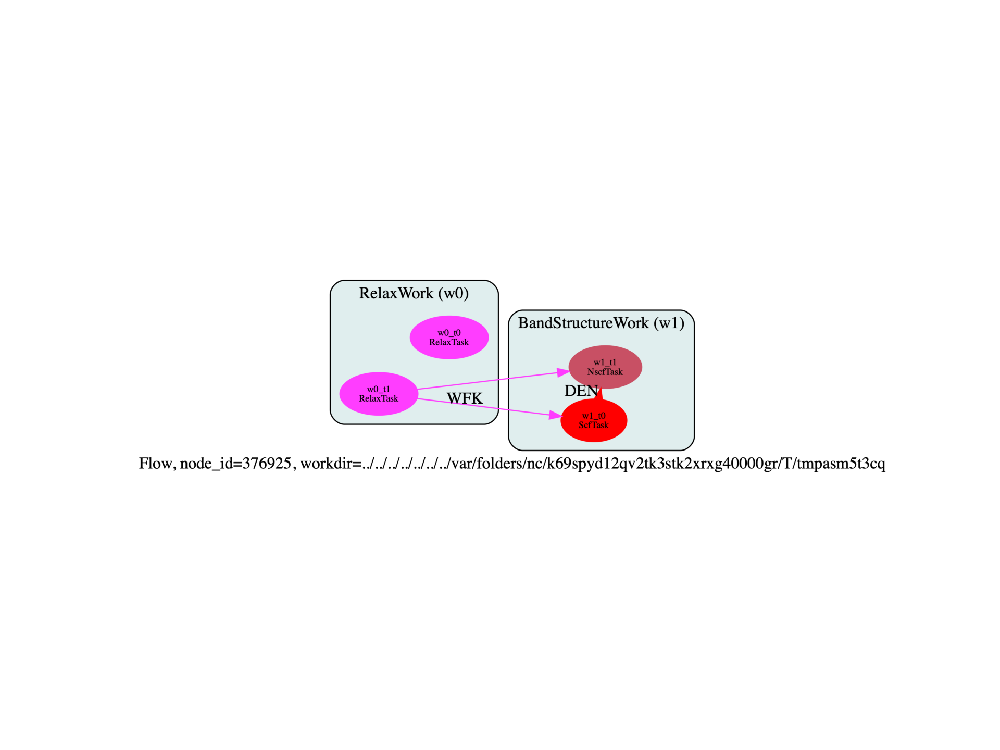

Note
Click here to download the full example code
Flow for Relaxation + Bands¶
This script shows how to perform a structural relaxation and a band structure calculation
WARNING: The API could change!
Out:
<ScfTask, node_id=97770, workdir=../../../../../../../var/folders/nc/k69spyd12qv2tk3stk2xrxg40000gr/T/tmpsx5p_bj0/w1/t0>: setting prtwf to -1
/Users/gmatteo/git_repos/pymatgen/pymatgen/util/plotting.py:550: UserWarning: Matplotlib is currently using agg, which is a non-GUI backend, so cannot show the figure.
plt.show()
from __future__ import division, print_function, unicode_literals, absolute_import
import sys
import os
import abipy.data as abidata
import abipy.abilab as abilab
import abipy.flowtk as flowtk
def make_ion_ioncell_inputs(paral_kgb=0):
pseudos = abidata.pseudos("14si.pspnc")
structure = abilab.Structure.from_file(abidata.cif_file("si.cif"))
# Perturb the structure (random perturbation of 0.1 Angstrom)
# then compress the volume to trigger dilatmx.
#structure.perturb(distance=0.1)
#structure.scale_lattice(structure.volume * 0.6)
global_vars = dict(
ecut=28,
ngkpt=[4,4,4],
shiftk=[0,0,0],
nshiftk=1,
chksymbreak=0,
paral_kgb=paral_kgb,
#prtwf=0,
)
multi = abilab.MultiDataset(structure, pseudos=pseudos, ndtset=2)
# Global variables
multi.set_vars(global_vars)
# Dataset 1 (Atom Relaxation)
multi[0].set_vars(
optcell=0,
ionmov=2,
tolrff=0.02,
tolmxf=5.0e-5,
ntime=50,
#ntime=3, #To test the restart
#dilatmx=1.1, # FIXME: abinit crashes if I don't use this
)
# Dataset 2 (Atom + Cell Relaxation)
multi[1].set_vars(
optcell=1,
ionmov=2,
ecutsm=0.5,
dilatmx=1.02,
tolrff=0.02,
tolmxf=5.0e-5,
strfact=100,
ntime=50,
#ntime=3, # To test the restart
)
ion_inp, ioncell_inp = multi.split_datasets()
return ion_inp, ioncell_inp
def make_scf_nscf_inputs(paral_kgb=1):
"""Returns two input files: GS run and NSCF on a high symmetry k-mesh."""
pseudos = abidata.pseudos("14si.pspnc")
#pseudos = data.pseudos("Si.GGA_PBE-JTH-paw.xml")
multi = abilab.MultiDataset(structure=abidata.cif_file("si.cif"), pseudos=pseudos, ndtset=2)
# Global variables
ecut = 28
global_vars = dict(ecut=ecut,
nband=8,
timopt=-1,
istwfk="*1",
nstep=15,
paral_kgb=paral_kgb,
)
if multi.ispaw:
global_vars.update(pawecutdg=2*ecut)
multi.set_vars(global_vars)
# Dataset 1 (GS run)
multi[0].set_kmesh(ngkpt=[8,8,8], shiftk=[0,0,0])
multi[0].set_vars(tolvrs=1e-6)
# Dataset 2 (NSCF run)
kptbounds = [
[0.5, 0.0, 0.0], # L point
[0.0, 0.0, 0.0], # Gamma point
[0.0, 0.5, 0.5], # X point
]
multi[1].set_kpath(ndivsm=6, kptbounds=kptbounds)
multi[1].set_vars(tolwfr=1e-12)
# Generate two input files for the GS and the NSCF run
scf_input, nscf_input = multi.split_datasets()
return scf_input, nscf_input
def build_flow(options):
# Working directory (default is the name of the script with '.py' removed and "run_" replaced by "flow_")
if not options.workdir:
if os.getenv("READTHEDOCS", False): __file__ = os.path.join(os.getcwd(), "run_relax_and_ebands.py")
options.workdir = os.path.basename(__file__).replace(".py", "").replace("run_", "flow_")
# Create the flow
flow = flowtk.Flow(options.workdir, manager=options.manager)
paral_kgb = 1
#paral_kgb = 0 # This one is OK
# Create a relaxation work and add it to the flow.
ion_inp, ioncell_inp = make_ion_ioncell_inputs(paral_kgb=paral_kgb)
relax_work = flowtk.RelaxWork(ion_inp, ioncell_inp)
flow.register_work(relax_work)
scf_inp, nscf_inp = make_scf_nscf_inputs(paral_kgb=paral_kgb)
bands_work = flowtk.BandStructureWork(scf_inp, nscf_inp)
# The scf task in bands work restarts from the DEN file of the last task in relax_work
if paral_kgb == 0:
# cg works fine if we restart from the WFK
bands_work.scf_task.add_deps({relax_work[-1]: "WFK"})
else:
# --> This triggers an infamous bug in abinit
bands_work.scf_task.add_deps({relax_work[-1]: "WFK"})
# --> This is ok if we used fourier_interp to change the FFT mesh.
#bands_work.scf_task.add_deps({relax_work[-1]: "DEN"})
# All task in bands_work will fetch the relaxed structure from the last task in relax_work
for task in bands_work:
task.add_deps({relax_work[-1]: "@structure"})
flow.register_work(bands_work)
flow.allocate()
flow.use_smartio()
flow.set_garbage_collector()
return flow
# This block generates the thumbnails in the Abipy gallery.
# You can safely REMOVE this part if you are using this script for production runs.
if os.getenv("READTHEDOCS", False):
__name__ = None
import tempfile
options = flowtk.build_flow_main_parser().parse_args(["-w", tempfile.mkdtemp()])
#build_flow(options).plot_networkx(with_edge_labels=True, tight_layout=True)
build_flow(options).graphviz_imshow()
@flowtk.flow_main
def main(options):
"""
This is our main function that will be invoked by the script.
flow_main is a decorator implementing the command line interface.
Command line args are stored in `options`.
"""
return build_flow(options)
if __name__ == "__main__":
sys.exit(main())
Total running time of the script: ( 0 minutes 0.491 seconds)